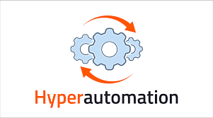
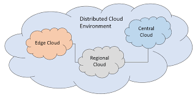

Click4Consultancy is my very own consultancy Firm. We offer proffesional advice over a wide variety of sectors in a business and specialise in Information Technology We started the firm in 2013 and have been producing flourishing results ever since. We have worked with prestigious business such as Dell, Hewlett-Packard and Apple and are alwyas looking to broaden our clientel. Our headquarters is based in Cork but we have many branches worldwide. To gain further insight into the type of work we do please consult our "About Consulting" section.
Hyperautomation is the combination of the right technologies in order to automate, simplify, discover, design, measure and manage workflows and processes across the enterprise. Hyperautomation combines these wide array of technologies such as RPA, Process Management, iBPMS, Case Management, Machine Learning, AI and Business Rules. It uses these technologies to enable the modern workforce, transform through business and IT allignment, leverage AI to enable end-to-end automation and provide important insight into ROI from automation. Click the picture for more information
Multi-experience development platforms (MXDPs) help enterprises to rapidly scale their applications across a range of devices and platforms. MXDPs can help you develop a single application that can be deployed on a variety of devices. This greatly shortens down your efforts and gives brands more control over their digital experiences. The main benefits of multiexperience are that it offers internal operational efficiencies, reduces time to market for Mobile Apps, gives better control over actual deployment and it eliminates potential security risks. Click the picture for more information
Distributed cloud is the application of cloud computing technologies to interconnect data and applications served from multiple geographic locations. Distributed, in an information technology (IT) context, means that something is shared among multiple systems which may also be in different locations. Distributed cloud speeds communications for global services and enables more responsive communications for specific regions. Click the picture for more information 